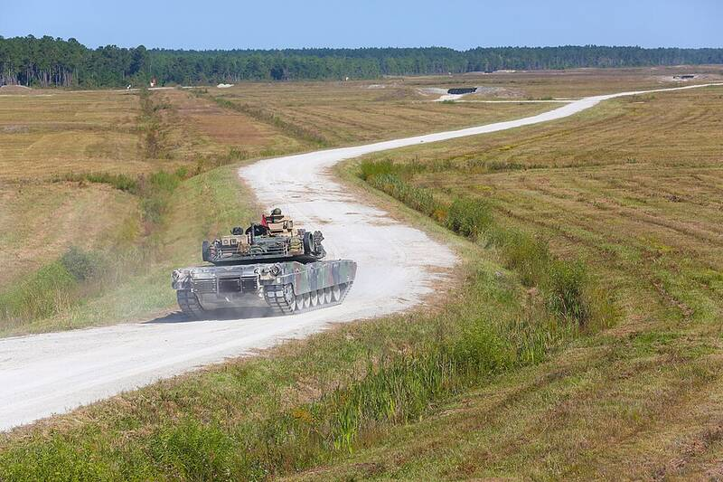

Camp Lejeune North Carolina North Carolina · Military base · 34.682°N, 77.351°W An M1A1 Abrams tank on a training range at Camp Lejeune, 2013. Photo: Lance Cpl. Joey Mendez, U.S. Marine Corps, Public domain (source) Largest Marine Corps base on the East Coast. Open in the interactive Watcher